Tomiya
Tomiya · Miyagi
Tomiya
Highlighted on the Miyagi map.
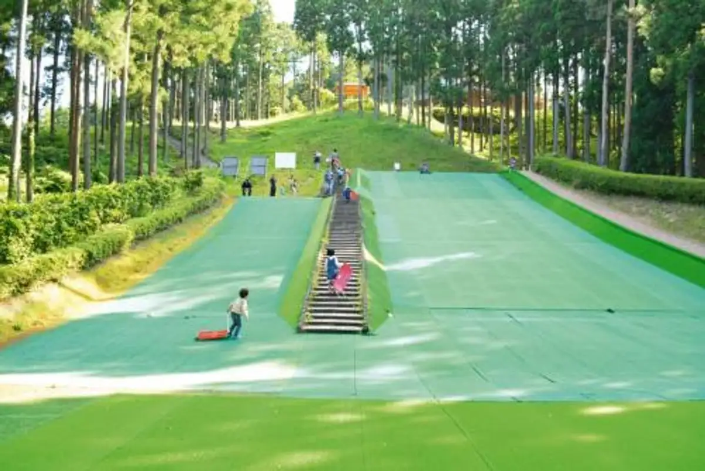
Dining
ウッデンシップ
Uddenshippu
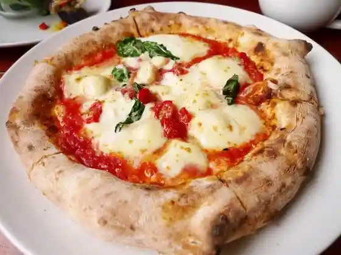
麺や遊大
Men Ya Yuu Dai
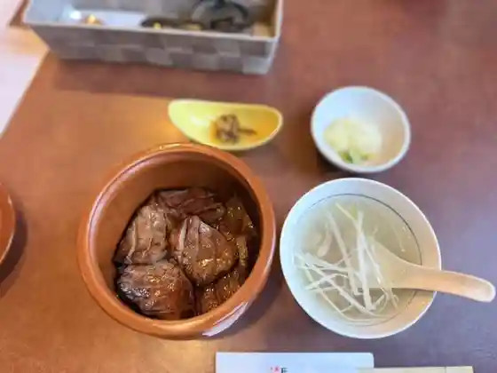
牛屋 たん兵衛
Ushiya Tan Bee
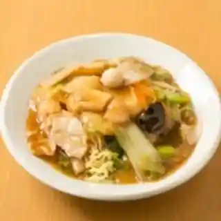
桃源花 富谷店
Tougen Hana Tomiya Mise
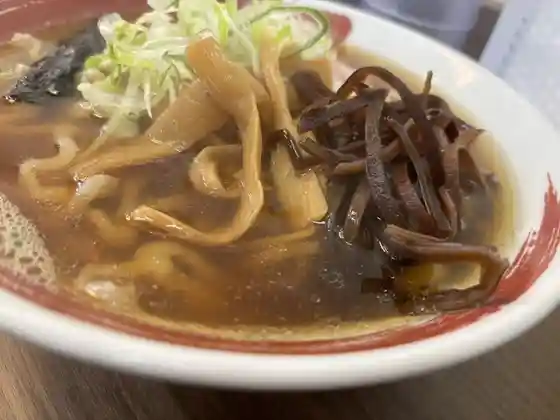
OMOUMA麺堂
OMOUMA
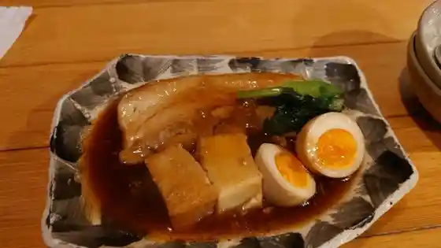
和食感 Yellow Factory
Yellow Factory
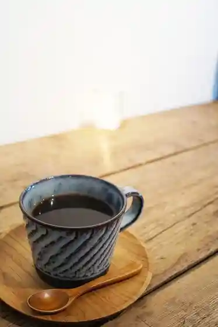
ナカオカフェ
Nakaokafe
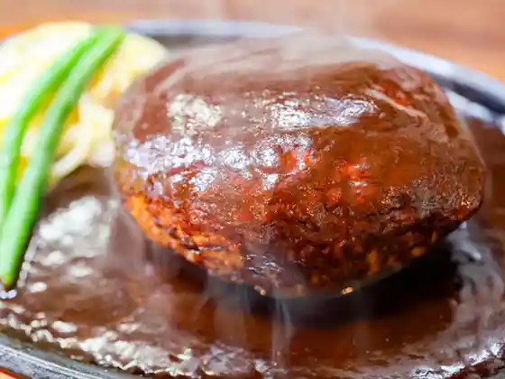
ハンバーグの店 オニオン
Hanbaagu No Mise Onion
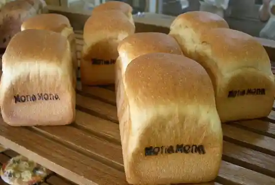
モナモナ
Monamona
らーめん工房 網地島屋 富谷本店
Raamen Koubou Aji Shimaya Tomiya Honten
レバニラ髙橋
Rebanira
マルタン食堂 prod by 丹心
prod by
煮干ラーメン松した
Niboshi Raamen Matsu Shita
蔵出し醸造味噌ラーメン えんまる
Kura Dashi Jouzou Miso Raamen Enmaru
煮干しそば 鶏そば 藍 仙台富谷店
Niboshi Shisoba Niwatori Soba Ai Sendai Tomiya Mise
Cafe hito no wa
Cafe hito no wa
ラーメンねぎっこ 富谷店
Raamen Negikko Tomiya Mise
noyer
noyer
源ちゃんラーメン
Gen Chan Raamen
ノースポール
Noosupooru
シャルメ ドゥ ブーランジェリー
Sharume Dou Buuranjierii
カフェ MaHaNa
MaHaNa
七福
Shichi Fuku
しんまちキッチン
Shinmachi Kitchin
満天食堂 明石台店
Manten Shokudo Akashi Dai Mise
R Baker 富谷店
R Baker
あったか・お箸ダイニング 熊谷
あったか・お箸ダイニング 熊谷
ひより屋
Hiyori Ya
寿松庵 本店
Hisashi Shouan Honten
NAKAO CHOCOLATE HOUSE
NAKAO CHOCOLATE HOUSE
菓匠 将満 仙台富谷店
Kashou Shou Man Sendai Tomiya Mise
あさひ
Asahi
とんかつ 大福
Tonkatsu Daifuku
ninna nanna
ninna nanna
カフェ ドゥ ラペ
Kafe Dou Rape
mamemaru+
mamemaru
麺処 松。
Men Tokoro Matsu .
七ッ森
Nanatsumori
チーズケーキ CAFE MAGY
CAFE MAGY
亀杉そば
Kame Sugi Soba
メランジェ
Meranjie
ごはん カフェ 鈴屋
Gohan Kafe Suzunoya
牛々 富谷店
Ushi (kurikaesi) Tomiya Mise
餅よし
Mochi Yoshi
コストコ 富谷倉庫店
Kosutoko Tomiya Souko Mise
カフェブリッコ 仙台富谷店
Kafeburikko Sendai Tomiya Mise
蒙古タンメン中本 仙台富谷店
Mouko Tanmen Nakamoto Sendai Tomiya Mise
フュメドゥコスモ
Fuyumedoukosumo
みちのくの海と陸 和食 緒
Michinokuno Umi To Riku Washoku O
石焼ステーキ 贅 宮城明石台店
Ishiyaki Suteeki Zei Miyagi Akashi Dai Mise
ニコリ
Nikori
イルミオカンポ
Irumiokanpo
居酒屋竹鳥物語
Izakaya Take Tori Monogatari
Cafe de Reve
Cafe de Reve
ナチュリー カフェ ペコ
Nachurii Kafe Peko
白いオルゴール
Shiroi Orugooru
アーニャ
Aanya
Punjabi Zaiqa
Punjabi Zaiqa
お肉のレストラン かのや
O Niku No Resutoran Kanoya
アマヤドリ珈琲
アマヤドリ珈琲
からあげ専門店 石井商店 富谷店
Karaage Senmonten Ishii Shouten Tomiya Mise
焼き芋 あいも
Yaki Imo Aimo
天下一品 明石台店
Tenkaippin Akashi Dai Mise
なかお 富谷店
Nakao Tomiya Mise
SUBWAY イオンモール富谷店
Subway Ionmooru Tomiya Mise
キャナリィロウ 富谷店
Kyanariirou Tomiya Mise
利久 富谷あけの平店
Toshihisa Tomiya Akeno Taira Mise
十割そば会 武蔵亭富谷店
Juu Wari Soba Kai Musashi Tei Tomiya Mise
仙台クラシックゴルフ倶楽部
Sendai Kurashikkugorufu Kurabu
ゆっぽ亭
Yuppo Tei
アトリエ･ムー
Atorie Atorie Muu
デイリーポート新鮮館 富谷店
Deiriipooto Shinsen Kan Tomiya Mise
富谷カントリークラブ
Tomiya Kantoriikurabu
ばにら・びーんず
ばにら・びーんず
いちこし
Ichikoshi
dear honey lover,
dear honey lover
サンロード ヤマザワ富谷成田店
Sanroodo Yamazawa Tomiya Narita Mise
ラーメン魁力屋 あけの平店
Raamen Kai Chikara Ya Akeno Taira Mise
パンセ 富谷本店
Panse Tomiya Honten
翔家
Shou Ie
極楽湯 富谷店
Gokuraku Yu Tomiya Mise
ビックハウス 富谷店
Bikkuhausu Tomiya Mise
スターバックス・コーヒー イオン富谷店
スターバックス・コーヒー イオン富谷店
菓子処 いさわ屋
Kashi Tokoro Isawa Ya
喜久水庵 イオン富谷店
Yoshihisa Mizu Iori Ion Tomiya Mise
EIGHT CROWNS
EIGHT CROWNS
元気くん市場 仙台店
Genki Kun Shijou Sendaiten
クロワッサン屋 サクサク 泉店
Kurowassan Ya Sakusaku Izumi Mise
Catherine hill's bakery
Catherine hill&39s bakery
食事処 一慶
Shokuji Tokoro Ikkei
ココス 富谷店
Kokosu Tomiya Mise
サイゼリヤ イオンモール富谷店
Saizeriya Ionmooru Tomiya Mise
はなまるうどん イオン富谷店
Hanamaruudon Ion Tomiya Mise
はま寿司 仙台富谷店
Hama Sushi Sendai Tomiya Mise
マクドナルド 明石台店
Makudonarudo Akashi Dai Mise
味の牛たん喜助 仙台富谷店
Aji No Ushi Tan Kisuke Sendai Tomiya Mise
MEGAドン・キホーテ 仙台富谷店
MEGAドン・キホーテ 仙台富谷店
富久寿司
Fuku Sushi
CAINZ 仙台富谷店
CAINZ
あじわいの朝 富谷店
Ajiwaino Asa Tomiya Mise
阿部蒲鉾店 イオンモール富谷店
Abe Kamaboko Mise Ionmooru Tomiya Mise
フラットホワイト コーヒーファクトリー The Library U-TOMIYA
The Library U-TOMIYA
ねこのひたい
Nekonohitai
温野菜スープ食堂 イオンモール富谷店
Onyasai Suupu Shokudo Ionmooru Tomiya Mise
もしもしカフェ
Moshimoshi Kafe
夢の風 とみや
Yume No Kaze Tomiya
コメダ珈琲店 富谷店
Komeda Koohii Mise Tomiya Mise
シャトレーゼ 富谷店
Shatoreeze Tomiya Mise
和風レストラン まるまつ 成田店
Wafuu Resutoran Marumatsu Narita Mise
山の猿 富谷店
Yama No Saru Tomiya Mise
ミスタードーナツ イオン富谷ショップ
Misutaadoonatsu Ion Tomiya Shoppu
吉野家 4号線富谷店
Yoshinoya 4 Gousen Tomiya Mise
マクドナルド 富谷イオンショッピングセンター店
Makudonarudo Tomiya Ionshoppingusentaa Mise
キャンディベース ドライブ イン カフェ
Kyandibeesu Doraibu In Kafe
とみやど
Tomiyado
菓子工房 アプポア
Kashi Koubou Apupoa
焼肉 牛和華 富谷店
Yakiniku Ushi Nodoka Tomiya Mise
ヤマザワ 富谷成田店
Yamazawa Tomiya Narita Mise
Hokkaido Factory イオンモール富谷店
Hokkaido Factory
ベーカリーあいの郷
Beekarii Aino Sato
内ヶ崎酒造店
Nai Ke Saki Shuzou Mise
街かどカフェ いこい
Machi Kado Kafe Ikoi
富谷市ブルーベリー生産組合 直売所
Tomiya Shi Buruuberii Seisan Kumiai Chokubai Tokoro
一口茶屋 明石台みやぎ生協店
Hitokuchi Chaya Akashi Dai Miyagi Seikyou Mise
築地銀だこ イオン富谷大清水ＳＣ店
Tsukiji Gin Dako Ion Tomiya Ooshimizu S C Mise
ケンタッキーフライドチキン イオンモール富谷店
Kentakkiifuraidochikin Ionmooru Tomiya Mise
牛角 富谷店
Gyuukaku Tomiya Mise
ガスト 富谷大清水店
Gasuto Tomiya Ooshimizu Mise
和風レストランまるまつ 富谷店
Wafuu Resutoran Marumatsu Tomiya Mise
焼肉 とこと～ん 富ヶ丘
Yakiniku Tokoto ~ N Tomi Ke Oka
ハチヤ
Hachiya
地上
Chijou
ハチヤミート
Hachiyamiito
信鮨
Shin Sushi
平禄寿司 宮城富谷明石台店
Taira Roku Sushi Miyagi Tomiya Akashi Dai Mise
幸楽苑 イオンモール富谷店
Kouraku En Ionmooru Tomiya Mise
四六時中 富谷店
Shirokujichuu Tomiya Mise
パン工場 イオン富谷店
Pan Koujou Ion Tomiya Mise
銀座コージーコーナー イオン富谷店
Ginza Koojiikoonaa Ion Tomiya Mise
ウィング丼丸 富谷店
Uingu Donburi Maru Tomiya Mise
ラルカンシェール みやぎ生協明石台店
Rarukanshieeru Miyagi Seikyou Akashi Dai Mise
ほっともっと 富谷町成田店
Hottomotto Tomiyachou Narita Mise
かつや 宮城富谷店
Katsuya Miyagi Tomiya Mise
109シネマズ富谷コンセッション
109 Shinemazu Tomiya Konsesshon
焼肉月宵
Yakiniku Gatsu Shou
セブンイレブン 富谷鷹乃杜4丁目店
Sebun'irebun Tomiya Taka No Mori 4 Choume Mise
森の芽ぶき たまご舎 イオンモール富谷店
Mori No Me Buki Tamago Sha Ionmooru Tomiya Mise
焼肉ココ
Yakiniku Koko
セブンイレブン 富谷明石台6丁目店
Sebun'irebun Tomiya Akashi Dai 6 Choume Mise
タカラ米穀
Takara Beikoku
牛角焼肉食堂 イオンモール富谷店
Gyuukaku Yakiniku Shokudo Ionmooru Tomiya Mise
ヴィーダカフェ 富谷大清水店
Viidakafe Tomiya Ooshimizu Mise
魚順
Sakana Jun
サーティワンアイスクリーム イオンモール富谷店
Saateiwan'aisukuriimu Ionmooru Tomiya Mise
三全 イオンモール富谷店
San Zen Ionmooru Tomiya Mise
モンペリエ ヨークベニマル明石台店
Monperie Yookubenimaru Akashi Dai Mise
パティスリー フランセーズ レクリア
Pateisurii Furanseezu Rekuria
GELATO BASE
GELATO BASE
サンパーティー
Sanpaateii
富谷パブリックコース
Tomiya Paburikkukoosu
めん六や 宮城富谷店
Men Roku Ya Miyagi Tomiya Mise
甚平
Jinpei
ニャンズカンパニー 富谷店
Nyanzukanpanii Tomiya Mise
焼肉寿寿
Yakiniku Hisashi Hisashi
LAWSON 富谷西沢店
LAWSON
ヤマザキショップ 富谷さとうや店
Yamazakishoppu Tomiya Satouya Mise
ストロベリーコーンズ 富谷店
Sutoroberiikoonzu Tomiya Mise
やきとり源次郎
Yakitori Genjirou
セブンイレブン 富谷清水仲店
Sebun'irebun Tomiya Shimizu Nakamise
セブンイレブン 富谷太子堂店
Sebun'irebun Tomiya Taishidou Mise
憙楽宴 佐籐
Ki Raku Utage Sa Tou
酒処 だるま
Sake Tokoro Daruma
サクラ カフェ
Sakura Kafe
都寿司
Miyako Sushi
寿司吉
Sushi Kichi
カワチ薬品 富谷店
Kawachi Yakuhin Tomiya Mise
杜の海鮮丼 富谷店
Mori No Kaisen Donburi Tomiya Mise
冨谷宿
Tomiya Yado
冠
Kan
Cannery Rowtomiya
Cannery Rowtomiya
Del Ceppo
Del Ceppo
Gyuyatambe
Gyuyatambe
Il Mio Campo
Il Mio Campo
Fupaotomiya
Fupaotomiya
Jusho An Main Store
Jusho An Main Store
North Pole
North Pole
Costco Wholesale Tomiya
Costco Wholesale Tomiya
Maido Okini Shokudo Sendai Tomiya Shokudo
Maido Okini Shokudo Sendai Tomiya Shokudo
Togenkatomiya
Togenkatomiya
Rikyu Tomiya Akenodaira
Rikyu Tomiya Akenodaira
Juwari Soba Kai Musashiteitomiya
Juwari Soba Kai Musashiteitomiya
Ramen Kobo Ajishimaya Main Store
Ramen Kobo Ajishimaya Main Store
Wooden Ship
Wooden Ship
Hamazushi Sendai Tomiya
Hamazushi Sendai Tomiya
Kurahachi Ramentomiyaoshimizu
Kurahachi Ramentomiyaoshimizu
Cake House Shiroi Orgoru
Cake House Shiroi Orgoru
Heiroku Zushi Miyagi Tomiya Akaishidai
Heiroku Zushi Miyagi Tomiya Akaishidai
Menya Chodaikichi
Menya Chodaikichi
Chateraise Tomiya
Chateraise Tomiya
Ramen Kairikiya Akeno Daira
Ramen Kairikiya Akeno Daira
Ramen Negikkotomiya
Ramen Negikkotomiya
Starbucks Coffee Aeontomiya
Starbucks Coffee Aeontomiya
McDonald s Akaishidai
McDonald s Akaishidai
McDonald s Aeon Mall Tomiya
McDonald s Aeon Mall Tomiya
Bbq Tokotone
Bbq Tokotone
Coco Ichibanya Tomiya Akenodaira
Coco Ichibanya Tomiya Akenodaira
Hell s Kitchen
Hell s Kitchen
Japanese Dining Shirokujichu Tomiya
Japanese Dining Shirokujichu Tomiya
Gusto Tomiya Oshimizu
Gusto Tomiya Oshimizu
Miraku
Miraku
Cafe 336
Cafe 336
Higepanda
Higepanda
Coco s Sendai Tomiya
Coco s Sendai Tomiya
L Atelier Mou
L Atelier Mou
Thirtyone Ice Cream Aeonmall Tomiya
Thirtyone Ice Cream Aeonmall Tomiya
Shunsai Uchigohan Nanaya Akaishidai
Shunsai Uchigohan Nanaya Akaishidai
Restaurant Fume de Cosmos
Restaurant Fume de Cosmos
Nanafuku
Nanafuku
Vanilla Beans
Vanilla Beans
Machen Akashidai Main Store
Machen Akashidai Main Store
Takadaya Aeon Mall Tomiya
Takadaya Aeon Mall Tomiya
Food Cultural Laboratory Kaze
Food Cultural Laboratory Kaze
Shoya
Shoya
Pepper Lunch Aeon Mall Tomiya
Pepper Lunch Aeon Mall Tomiya
Sobadokoro Suzuya
Sobadokoro Suzuya
Miyabi
Miyabi
Sumiya
Sumiya
Surakkan
Surakkan
Nobuzushi
Nobuzushi
Beko Masamune Honpo
Beko Masamune Honpo
Rayama
Rayama
Chodaikichi
Chodaikichi
Taiho
Taiho
Juju Aeon Mall Tomiya
Juju Aeon Mall Tomiya
Pomme
Pomme
Narita Nomi Kui Dokoro
Narita Nomi Kui Dokoro
Florist Hana Mizuki
Florist Hana Mizuki
Sobadokoro Sansho
Sobadokoro Sansho
Korai
Korai
Kikuno
Kikuno
Cafe Ron
Cafe Ron
Tachibana
Tachibana
Irohatei Tomiya
Irohatei Tomiya
Gyukaku Tomiya
Gyukaku Tomiya
Okuno Sushi
Okuno Sushi
D s Happines Aeontomiya
D s Happines Aeontomiya
Rice Bread Cafe
Rice Bread Cafe
Hyunjae
Hyunjae
Sushi Hokkaido Tomiya
Sushi Hokkaido Tomiya
Mizuguruma
Mizuguruma
Izakaya Okan
Izakaya Okan
Izakaya Jinbei
Izakaya Jinbei
Gateau Nozaki
Gateau Nozaki
Ragunoo Sasaki Yamazawa Tomiya Narita
Ragunoo Sasaki Yamazawa Tomiya Narita
Melange
Melange
Maruso
Maruso
Gyoza No Hoei Tomiyaten
Gyoza No Hoei Tomiyaten
Hamataro Tomiya
Hamataro Tomiya
Izakaya Taketori Monogatari
Izakaya Taketori Monogatari
Ishii Shoten Tomiya
Ishii Shoten Tomiya
Shop
Tomiyado Souvenir Corner
Local specialty foods and crafts inside the Tomiya-juku tourism station
Sights
Okameyama Forest Park
Hilltop forest park with walking trails above Tomiya
Tomiyado Tourism Station
Restored post-town hub with galleries, shops, and eateries on the Oshu Kaido
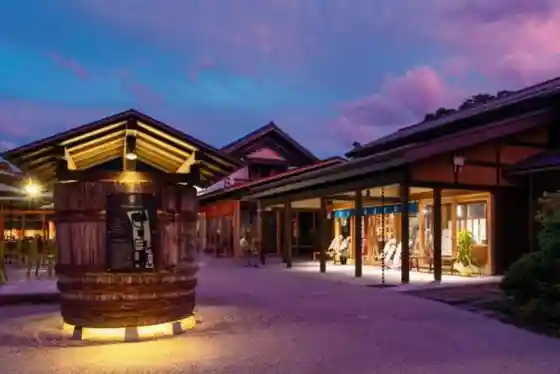
Blueberry Picking Experience
Seasonal u-pick blueberry farm in Tomiya
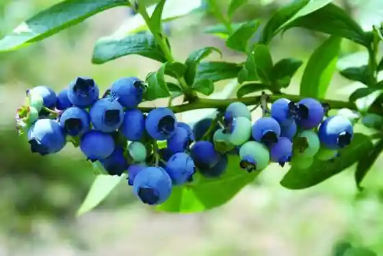
Tomiya Folk Gallery
Folk-culture gallery in the historic Tomiya-juku area
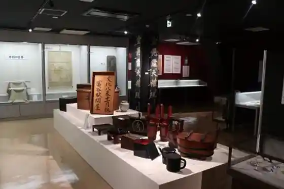
Tomiya-juku Post Town
Surviving streetscape of the Oshu Kaido post station
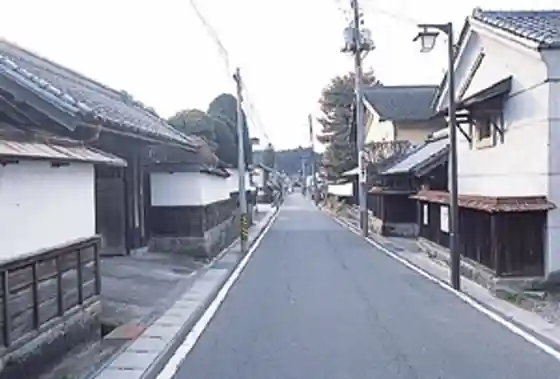